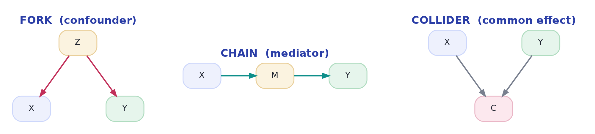

Causal Diagrams (DAGs)
Drawing your assumptions so you can reason about them.
"What should I control for?" is the question in observational analysis — and the last lesson showed it has a dangerous wrong answer ("everything"). A causal diagram (a DAG — directed acyclic graph) turns it into a set of readable rules. You draw the arrows you believe exist, and the diagram tells you which variables to adjust for and which to leave alone. It's the single most useful thinking tool in causal inference, and it takes about ten minutes to learn the core of.
Fork, chain, colliderThree building blocks — and that's nearly all of it
Every causal diagram is built from three elementary patterns of three variables. Learn how each one transmits or blocks association, and you can read any DAG:

The rules that fall out of these three:
- Fork — confounder (Z → X, Z → Y). Z opens a backdoor path X ← Z → Y that leaks non-causal association. Adjust for Z to close it. This is the one you must not miss.
- Chain — mediator (X → M → Y). M carries the effect. If you want the total effect of X, leave M alone; adjusting for it blocks the very pathway you're trying to measure.
- Collider — common effect (X → C ← Y). A collider path is naturally blocked. Adjusting for C (or selecting on it) opens it and invents a spurious X–Y correlation. Do not adjust for colliders.
The backdoor criterionThe rule: close every backdoor, open no new ones
A backdoor path is any non-causal path from X to Y that starts with an arrow into X (like X ← Z → Y). These paths carry confounding association. The backdoor criterion says: to estimate the causal effect of X on Y, adjust for a set of variables that blocks every backdoor path — without adjusting for any mediator or collider. Do that, and what's left is the clean causal effect. The DAG is what lets you see the backdoor paths and pick the right adjustment set.
The seductive mistake is "more controls = safer." The collider says otherwise. Throwing every available column into a regression can open collider paths and block mediators, biasing the estimate in ways no amount of data fixes. Controls are a scalpel, not a fire hose — the DAG tells you where to cut.
The spookiest biasSee a collider create a correlation from nothing
Take two things that are genuinely unrelated — say an actor's talent (X) and their looks (Y). Now select on a common effect: to get hired, you need talent or looks (C = talent + looks). Look only at hired actors and a fake negative correlation appears — the plain ones must be talented to have made it, the untalented ones must be beautiful. Nothing connects talent and looks in reality; conditioning on the collider manufactured the link:
import numpy as np
rng = np.random.default_rng(1)
n = 20000
talent = rng.normal(size=n)
looks = rng.normal(size=n) # independent of talent!
hired_score = talent + looks + rng.normal(size=n)*0.3 # collider: caused by BOTH
overall = np.corrcoef(talent, looks)[0, 1]
print(f"correlation in everyone: {overall:+.2f} <- ~0, truly unrelated")
sel = np.abs(hired_score - 2.0) < 0.25 # look only at 'hired' actors (high score)
among = np.corrcoef(talent[sel], looks[sel])[0, 1]
print(f"correlation among 'hired' actors: {among:+.2f} <- negative, out of thin air!")correlation in everyone: +0.00 <- ~0, truly unrelated correlation among 'hired' actors: -0.90 <- negative, out of thin air!
This is selection bias — and it's a collider in disguise. Any time your data is filtered by an outcome ("we only have data on customers who converted," "only patients sick enough to be admitted"), you may be conditioning on a collider and reading correlations that don't exist in the population. How the data was selected is a causal assumption you must draw.
Interactive labYour turn — measure the collider bias
talent and looks are independent. But hired (a boolean) is a collider — caused by both. Among only the hired actors (hired == True), compute the correlation between talent and looks, round to 2 decimals, and assign it to answer. It should come out negative, even though they're unrelated overall.
talent[hired], looks[hired], then np.corrcoef(...)[0,1] and round to 2 dp.answer = round(float(np.corrcoef(talent[hired], looks[hired])[0, 1]), 2)Negative — a correlation that does not exist in the full population appears the instant you restrict to 'hired'. This is why how your sample was selected is a causal assumption, and why you must never adjust for (or select on) a collider.
★ Key points to remember
- A DAG encodes your causal assumptions as arrows; it tells you what to adjust for.
- Fork (Z→X, Z→Y): Z is a confounder — adjust for it to close the backdoor.
- Chain (X→M→Y): M is a mediator — don't adjust if you want the total effect.
- Collider (X→C←Y): adjusting for or selecting on C creates a spurious association (selection bias).
- Backdoor criterion: block every backdoor path, adjust for no mediators or colliders — "more controls" is not always safer.
◆ Practice▸
Show solution & reasoning
The DAG: Z → X, Z → Y, and X → Y (the effect of interest). Family wealth Z is a fork/confounder creating a backdoor path X ← Z → Y. To estimate the scholarship's true effect you must adjust for Z (family wealth) to close that backdoor — otherwise part of the apparent graduation boost is just wealthier kids being wealthier. You would not adjust for anything on the path X→Y (e.g. a mediator like 'hours able to study'), since that would remove part of the scholarship's own effect.
Show solution & reasoning
Controls aren't free — they only help when the variable is a confounder (a common cause of treatment and outcome). Add a mediator (something the treatment causes on its way to the outcome) and you erase part of the real effect. Add a collider (something caused by both, or a selection filter) and you invent a correlation that isn't there. So blindly controlling for everything can bias the estimate in either direction, and no amount of extra data fixes a mis-specified adjustment set. The disciplined move is to draw the assumed causal diagram and adjust for exactly the set that closes the backdoors — no more, no less.
◎ Deep dive: d-separation, automated adjustment sets, and M-bias▸
d-separation, in one idea. A path between X and Y is blocked if it contains (a) a non-collider you have adjusted for, or (b) a collider you have not adjusted for. X and Y are 'd-separated' (independent) given a set S if S blocks every path between them. The backdoor criterion is just d-separation applied to the non-causal (backdoor) paths: find an adjustment set S that blocks all of them while leaving the causal path X→...→Y open. Software (DAGitty, the dowhy library) will read your drawn DAG and output a valid adjustment set — turning a subtle logic problem into a checkbox.
M-bias — the trap that breaks 'when in doubt, control for it.' Consider U1 → X, U1 → Z, U2 → Z, U2 → Y, where Z is a pre-treatment collider (caused by two hidden causes). Z happens before treatment and correlates with both X and Y, so it looks like a confounder you should adjust for — but adjusting for it opens the collider and creates bias where there was none. This is why 'it happened before treatment, so control for it' is not a safe rule, and why you genuinely need the diagram: the role of a variable, not its timing, decides whether adjusting helps or hurts.